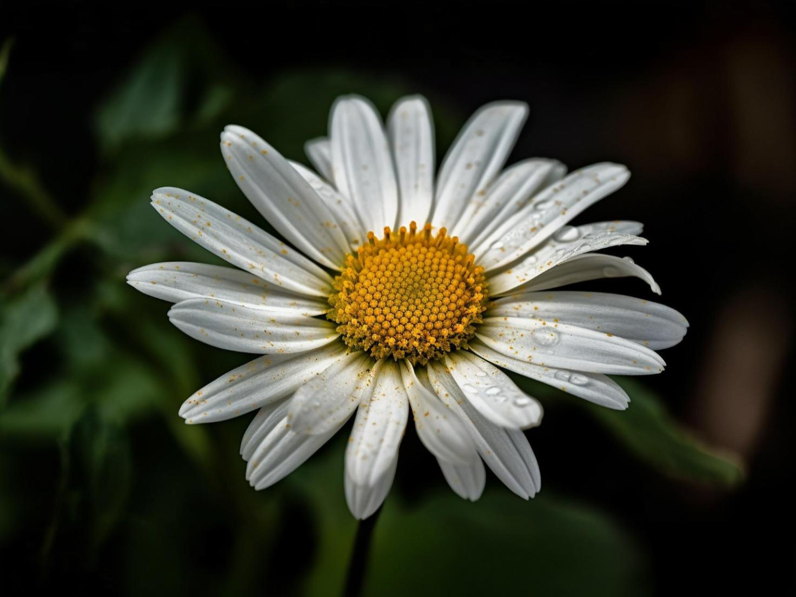
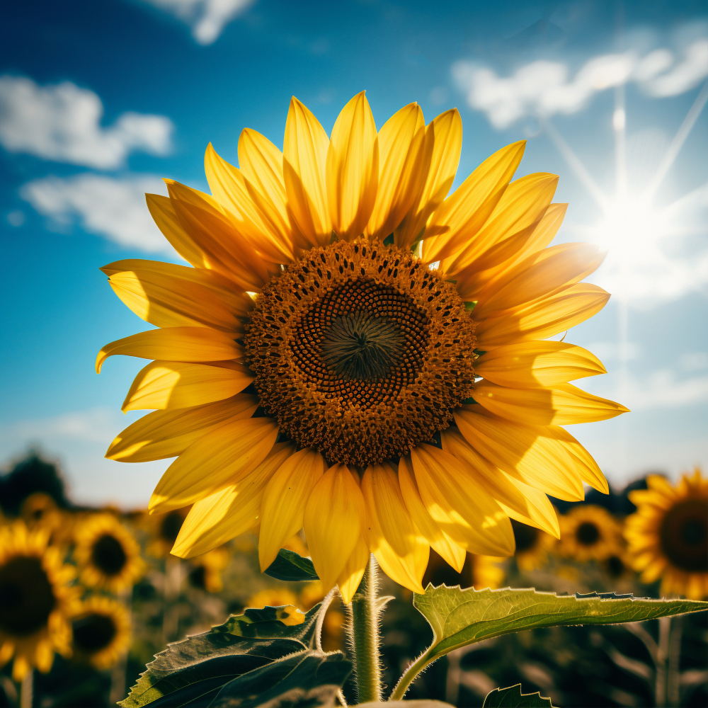
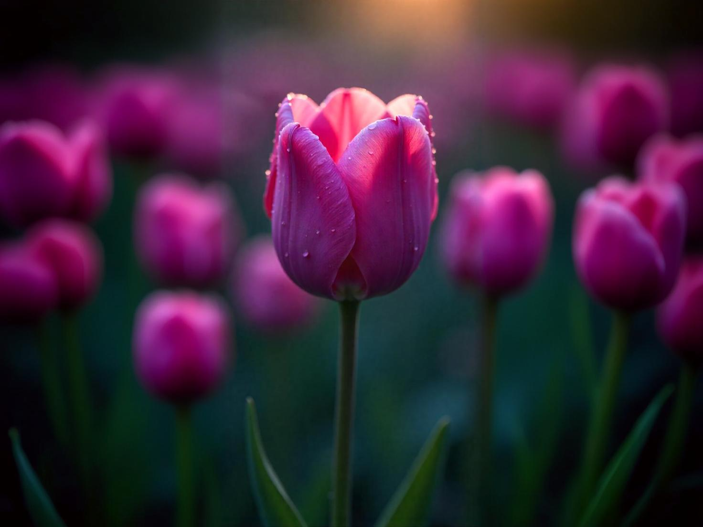
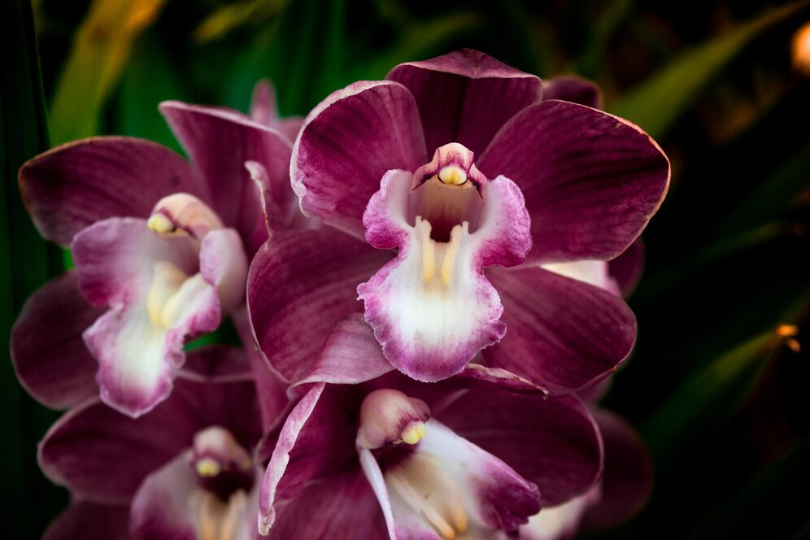

Exposição

Rosa
As rosas são flores amplamente reconhecidas por sua beleza e fragrância. Cultivadas há milênios, elas simbolizam amor e paixão.
Saiba mais

Margarida
As margaridas encantam pela simplicidade das pétalas brancas e centro amarelo. São símbolo de pureza, inocência e alegria.
Saiba mais

Girassol
Os girassóis são conhecidos por suas pétalas amarelas vibrantes e por acompanharem o sol. Representam vitalidade e positividade.
Saiba mais

Tulipa
As tulipas florescem na primavera e são muito valorizadas por sua elegância. Simbolizam amor verdadeiro e renovação.
Saiba mais

Orquidea
As orquídeas são admiradas por suas flores exóticas e sofisticadas. Representam beleza rara, elegância e força espiritual.
Saiba mais
Lirio
Os lírios possuem pétalas delicadas e aroma suave. São associados à pureza, renovação e à espiritualidade.
Saiba mais